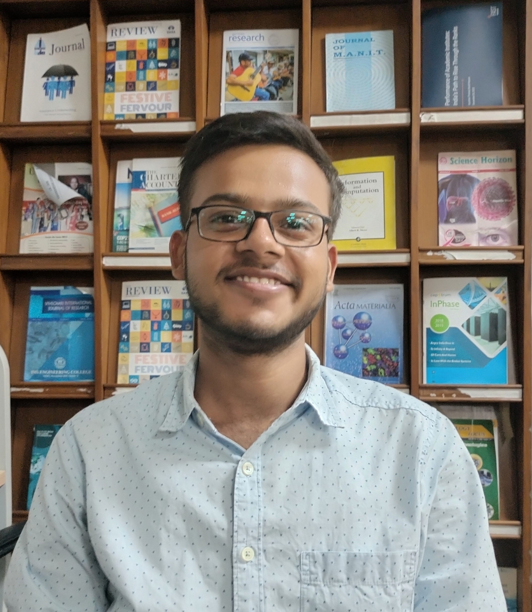

Ayush Mishra

Summary
I am an individual dedicated towards my works and aims to accomplish my tasks as good as I can.
Education
- BTech,Civil - Indian Institute of Technology, Guwahati (2022-Present)
- Senior Secondary, CBSE - Gyandeep Academy, Varanasi (2021-2022)
- Secondary, CBSE - Gyandeep Academy, Varanasi (2019-2020)
Work Experience
Jee Simplified
Dec 2022-Present
- Mentoring Jee students for upcoming exams
- Personalised guidance to 40+ students
Skills
- Programming : Python, C++
- Web Technology : HTML, CSS
- Operating System : Windows
Achievements
- Jee Advanced 2022, Secured a rank in Top 6.17% out of 155538 candidates
- Jee Mains 2022, Got 98.32%ile among 7,69,589 candidates
Others